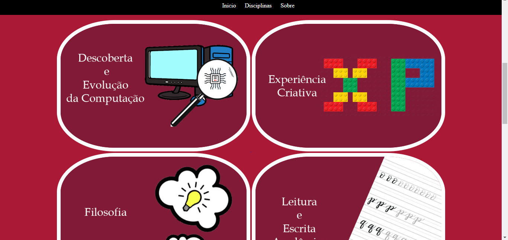
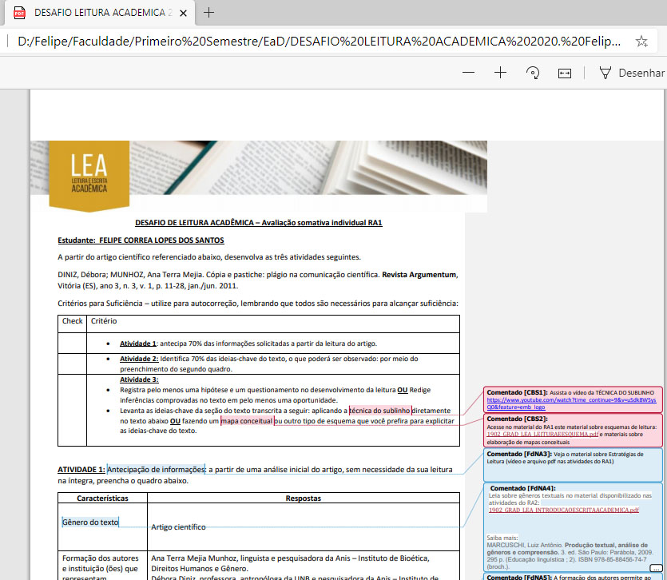

Sobre
O presente trabalho trata-se de um TDE na matéria de Experiência Criativa, onde visa abraanger os projetos de todas disciplinas realizados ao longo do semestre.
Orientadores:
Eduardo Lino
Luiz Pavão
Aluno:
Felipe Correa Lopes dos Santos, bacharelando em Ciência da Computação - 1º Período Noturno - PUCPR
X
Descoberta e Evolução da Computação
Ministrado pela Dra. Deborah Ribeiro Carvalho
Trabalho: Reunir informações acerca das 8 pandemias, tais como tecnologias utilizadas para levantamento dos dados e estatísticas
Trabalho: Traçar uma régua histórica de cientistas e inventores que contribuiram para o avanço da tecnologia
Trabalho: Conhecendo uma base de como ocorre a organização dos dados
Objetivo: Conhecer sobre a ferramenta UPFlux
Trabalho: Conhecendo sobre Big Data, Ciência de dados e Programação de Linguagem natural
X
Experiência Criativa
Ministrado pelo Me. José Eduardo Lino e pelo Me. Luiz Antonio Pavão
Trabalho: Implementar um programa a partir da engine Construct 3 a fim de conhecer sobre a ferramenta
Trabalho: Implementar um programa utilizando a linguagem JAVA através da engine Processing

Trabalho: Implementar um programa utilizando a linguagem C# contendo pelo menos 10 tipos de objetos, a fim de se aprofundar sobre eles
Trabalho Discente Efetivo. Objetivo: Implementar um site utilizando as linguagens HTML e CSS a fim de mostrar os projetos desenvolvidos em todas disciplinas

X
Filosofia
Ministrado pelo Me. Fred Trevisan
Apresentação: Escrever um texto e elaborar uma apresentação acerca de algum filósofo que tenha uma teoria do conhecimento

Ao longo do semestre, durante praticamente todas as aulas foram resolvidos questionários que abordavam algum texto acerca do conteúdo passado em aula
X
Leitura e Escrita Acadêmica
Ministrado pela Me. Carla Valéria Feitosa
Trabalho: Aprendendo sobre cópia e pastiche

Trabalho: Revisão de Leitura
Trabalho: A partir da revisão de leitura anterior, formalizar um artigo
X
Modelagem de Fenômenos Físicos
Ministrado pelo Dr. Orlando Alcantra Soares
TDE: A partir do notebook do Jupyterlab utilizando da linguagem Python e Marckdown, realizar anotação de todas as aulas do semestre
Trabalho: Conhecendo mais sobre gráficos em Python
X
Raciocínio Algoritmico
Ministrado pelo Dr. Emerson Cabrera Paraiso
Trabalho: Implementar um programa em Python simulando um Estar digital
Trabalho: Implementar um programa em Python simulando uma cartela de vacinas digital